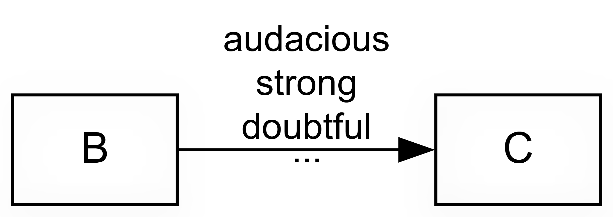
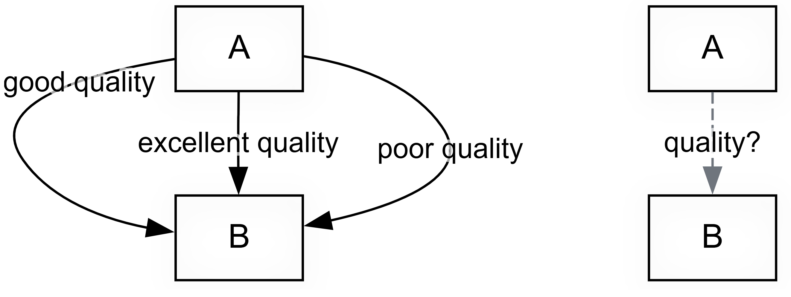
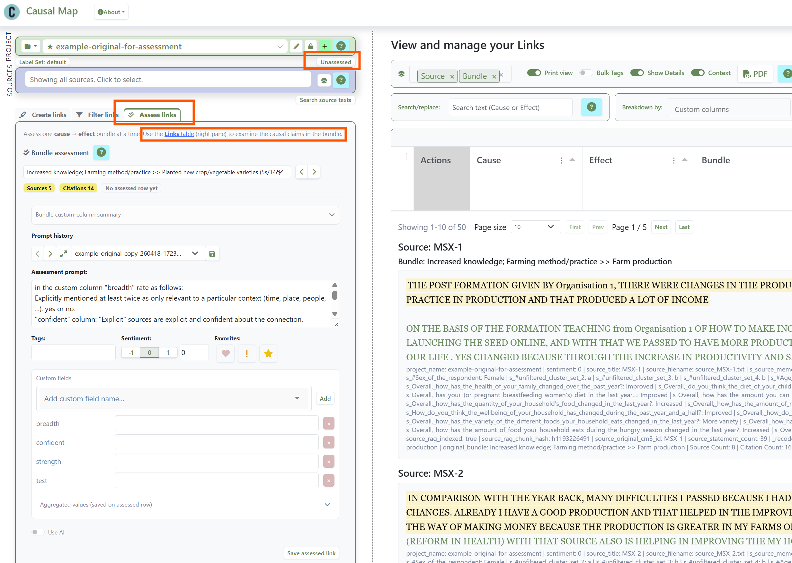
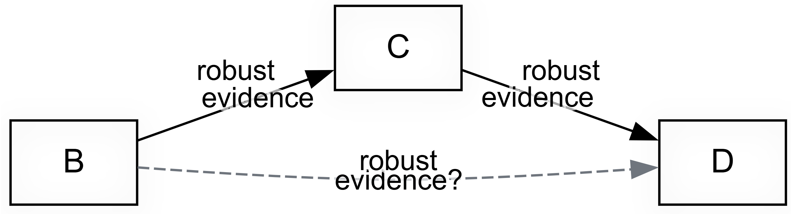
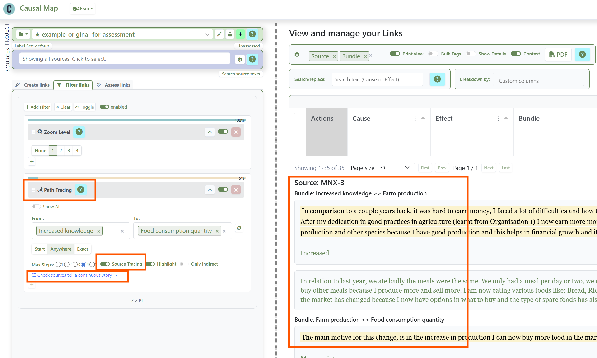
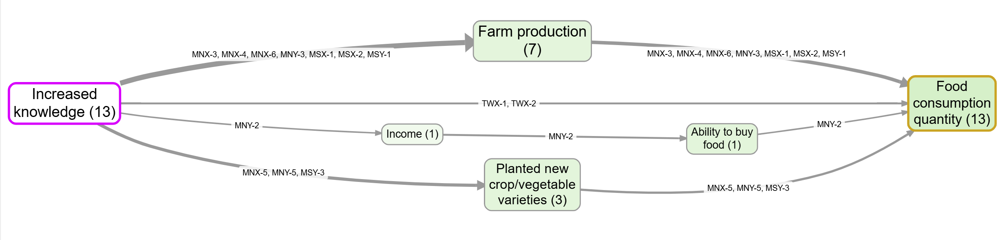
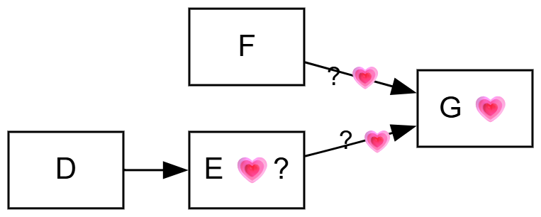
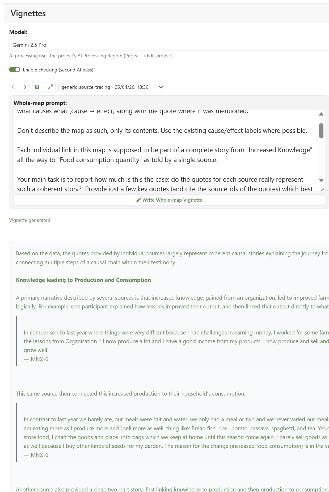
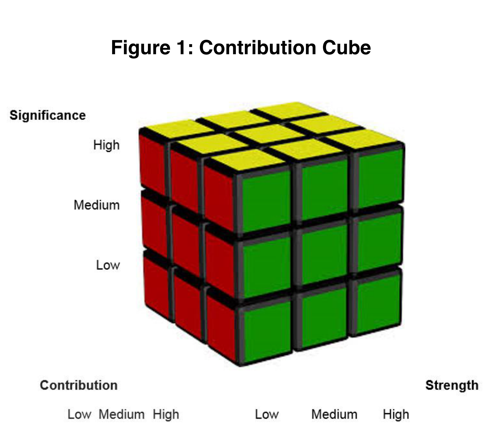

Summary: Quality assurance in causal mapping#
In the qualitative space, evaluators have many tools and approaches for reaching robust and rigorous conclusions about causal influences on an outcome of interest, perhaps as the operation of a mechanism. And evaluators are increasingly interested in causal pathways: multiple, multi-step, perhaps surprising paths along which influence is passed. How can we reach robust and rigorous conclusions specifically about influences along causal pathways? This briefing paper claims that causal mapping has a long tradition of this kind of thinking. In particular we point to some old and new features within our causal mapping app, Causal Map 4, which can help with this task.
About causal mapping#
Causal mapping is a way of analysing qualitative data, what people say in interviews, focus groups, reports or any written source, when you want to understand what these sources think causes what. An analyst reads through the material and codes each causal claim ("the rains ruined the harvest", "the training raised her confidence") as a link from one factor to another. Combining links from multiple sources, and you have a causal map: a network showing which factors people believe influence which others. For a longer introduction, see this and this.
Causal mapping is like systems mapping, but rather than jumping straight to modelling real causal connections in the world, we first model the multiple cognitions or beliefs or claims made by multiple sources about each link, before (perhaps) making inferences about the world.
From claims to conclusions#
Causal mapping, as we practise it, is not a method of causal inference. The fact that twenty people, or twenty thousand, claim that X influences Y does not on its own warrant the conclusion that X really does influence Y. One job of causal mapping is to assemble the claims so that an evaluator or researcher can make a judgement, not to make the judgement for them. It is a preparatory step which is useful for almost any evaluation approach but especially for theory-based approaches like contribution analysis.
The longer argument for this conservative stance is in our companion paperon minimalist coding and here; see also Powell et al. (2024); Powell et al. (2023).
The Causal Map app helps at several moments in the quality assurance task.
This paper covers these analytical moments. The bundle assessment phase, the most substantive single addition, has its own paper: Assessing quality or robustness of evidence for a causal link based on a bundle of coterminal causal claims.
Sidebar: The same QA problematic and logic applies even when the links are not strictly causal: in social network analysis or other map-based work, you may still want to go from a mass of raw claims to a smaller set of checked or verified links, even though the links are about relationships rather than causation. Causal Map can do this too, and the mechanics described below work in the same way, though our main focus here is specifically on causal links.
A note on "evidence"#
We have been criticised for calling the mass of causal claims "evidence". The objection is reasonable: a claim is not really evidence until it has been weighed against something. Moving from coded claims to warranted conclusions is exactly the Rubicon this paper is about. When we use "evidence" loosely, we mean only the body of claims that the evaluator can take into account, not that it has already been judged to be of any particular quality.
Five moments for quality assurance#
- Coding individual claims
- Moving from claims to bundles
- Tracing Pathways
- Judging value and relative contribution
- Holistic judgements
We will cover them all in more detail in the rest of this paper. Only the last moment is required. Most projects use several, or other overlapping approaches.
We have always assumed that evaluators and researchers using causal mapping and Causal Map will be doing serious quality assurance when crossing the Rubicon from claims to conclusions, but this is the first time that we have tried to address this task in more detail and point out how the Causal Map app can help.
Sidebar: This is separate from the way causal inference is done specifically in the Qualitative Impact Protocol (QuIP) Copestake et al. (2019) — although QuIP projects often use causal mapping, they have a more specialised and specific set of supports for causal inference.
As far as we know, evaluators have primarily addressed the problem of making judgements about causal influences a practical but synthetic problem of making judgements about a contribution to an outcome, a judgement which may be about a single causal link or about a pathway or mechanism. So Outcome Harvesting for example often involves making holistic judgements about some kind of path or mechanism from intervention to outcome which is primarily presented as a single problem of "intervention influences outcome?".
What causal mapping adds is a more general, articulated framework to assemble (and then make judgements about) not only individual links (or a single bundle of links) but then about individual links combined into a pathway or network, beginning or ending with any kind of factor, not just outcomes/interventions. There is a formal problem about how causal influences might or might not operate transitively down a causal pathway (if B influences C, and C influences D, does B influence D?), and there is another formal (and practical) problem about how/if/whether our assessment of the quality of individual claims or bundles of claims can be assembled into an assessment of the quality of the evidence for a pathway: (if we have a validated claim that B influences C, and a validated claim that C influences D, when/how do we have a validated claim that B influence D?)
From a causal mapping perspective, it gives us a slight headache when evaluators talk about the robustness of evidence for the "causal link" or even "mechanism" from an intervention to an outcome. This holistic perspective, reducing a network of causal pathways to a single link is useful, even essential, but it can gloss over a whole nest of problems.
Tom Aston Aston (2019) takes the holistic route and proposes rubrics ; Mayne (2014) for judging
- Strength (of evidence)
- Contribution
- Significance
Tom Aston and Marina Apgar propose eight quality attributes in their work on rubrics (Aston 2019) for single cases.
- Plausibility
- Uniqueness
- Triangulation
- Transparency
- Independence
- Representation
- Transferability
- Ethics
| Individual claims | Bundles of claims | Tracing / transitivity | Outcome-related | Holistic | |
| Strength (of evidence) | ? | ✅ | ? | ✅ | |
| Contribution | ✅ | ✅ | |||
| Significance | ✅ | ✅ | |||
| Plausibility | ✅ | ✅ | ✅ | ||
| Uniqueness | ✅ | ✅ | |||
| Triangulation | ✅ | ✅ | |||
| Transparency | ✅ | ? | ✅ | ||
| Independence | ✅ | ✅ | |||
| Representation | ✅ | ✅ | |||
| Transferability | ✅ | ✅ | |||
| Ethics | ? | ? | ✅ |
Of these, Strength of Evidence
First moment: Quality of individual links#
1) Coding individual claims: raw, individual claims can be quality-checked by looking at the source metadata, the context and the surrounding text and then perhaps qualified with a tag as needed, e.g. as Doubtful or Surprising.

In this kind of approach, as opposed to, say, systems mapping, you often get bundles of multiple links between any one particular cause and one particular effect: Bundle of Links — definition. The links within each "bundle" represent different claims about the same causal link — from different sources, or different places within the same source text.
Now that AI lets us scale a single project to tens or hundreds of thousands of causal claims, the gap between "we have many claims" and "we have warranted conclusions" matters more than ever. Practitioners need ways to cross the Rubicon from claim to judgement that are practical, transparent, and modest in their epistemic commitments.
The first step to quality assurance of a claim is to tag it. The Causal Map app, following other forms of QDA, has always allowed free-form tags at the link level. A tag like #doubtful records a misgiving while coding. Later, you can filter such links in or out. Tags are freeform: you can create unclear or #decisive or anything you want.
Beyond tags, you can add custom columns to your links table. Here are two common columns.
A conviction column records how sure the source sounds about the claim. In practice most claims are unmarked: people just say "X influenced Y" without qualification. A workable three-point scale is weak / neutral / strong, with a few links in the weak or strong bins, and the bulk in the middle. This is not a coding of the causal strength of the link itself but only a coding of how confident the source sounds.
If desired, researchers can use a strength column which captures cases where a source explicitly says the influence is strong or weak. Our experience says that humans rarely actually mention this in speaking and writing: again, the bulk of claims is likely to be assessed as neutral: no explicit information about strength. But it might be useful to record strength, for example because we might want to filter out claims about weak strength, or examine only the strong ones.
We suggest caution in interpreting these kinds of scale as ordinal (small, medium, large; or 1, 2, 3). Linguistically, these kinds of columns/attributes rest on the idea that the default claim is unmarked or neutral, which is not the same as "middling". In most cases simply no need to mention or even think about this aspect. The fact that most people do not mention the strength of a causal link when talking about it does not mean they think the links were of "medium" strength. It just means it did not occur to them to think about or mention the strength, or that the idea of strength is not even useful or applicable in this case.
For more background on why we have been reluctant to code strength, at least in the way that systems modellers do it: Our approach is minimalist — we do not code the strength of a link).
Beyond Conviction and Strength, other columns/attributes/judgements are possible. The framework is open: you decide what matters in your project for supporting the conclusions you want to make.
The Causal Map app now supports creating custom link columns like this either before coding or even on the fly, in the middle of coding.
You can also add custom columns for sources rather than links, for example distinguishing reliable from unreliable sources, or recording role and position. Because every link belongs to a source, these scores become available for each link, and you can filter accordingly.
Bundle-level summaries make this useful. When you look at a bundle of claims for X influences Y, the app summarises the distribution in a sub-panel of the Assessment panel, for example reporting that in most cases conviction was neutral, with a few sources emphasising they were sure. This is helpful both as a backdrop for human judgement and as a filter (e.g. exclude links where the source said they were uncertain). See Coding with and using link metadata for the mechanics.
Second moment: The bundle assessment phase#
2) Moving from claims to bundles, the bundle assessment phase.

This is a separate stage in which the analyst, looking at the entire batch of causal claims, their context, metadata, and perhaps ground-level judgements from Moment 1, above, judges each bundle of co-terminal claims and does one of two things:
- collapses each bundle into a single link which is rated with one or more quality judgements
- decides to either collapses it into a single, certified "assessed link" or simply discards the entire bundle, leaving only the "assessed links"
This warrants its own paper; see Assessing quality or robustness of evidence for a causal link based on a bundle of coterminal causal claims for the detail. In outline:
Once coding is finished and any cleaning has been done, you fix on a set of bundles you want to take seriously. These are the bundles that survive your filters, perhaps after zooming to a higher level of the coding hierarchy and restricting to particular sources or subgroups. There might be five or fifty or a hundred such bundles of links. This is the data you are going to base the rest of your analysis on.
You then look at each bundle, with all its underlying quotes and source metadata, and decide whether the body of claims is enough to vouch for a second-level "assessed link" between the two factors. The assessed link is a new type of object in the links database. By default it inherits the citation count and source count of the underlying bundle and can carry additional scores from custom columns. Some bundles will not produce an assessed link at all, because you have judged the evidence too thin. You simply skip the bundle without creating any assessed link. Or you create a link with a custom column "Passed?", with value = "Fail".

Creating new individual "assessed links" from bundles of links, bundle by bundle, in the Causal Map app
You can page through the bundles by hand, or you can let the AI do a first pass against a rubric you supply, and then review its work. The app will not let you create assessed links — either manually or with AI — until you have written your criteria into a rubric or prompt sub-panel. This is on purpose.
The rubric might be a five-level scale like the one Jewlya Lynn and colleagues used in their fishing industry retrospective (Lynn 2025), or just yes/no. Or you might want to create multiple dimensions like "confidence" and "degree of triangulation". The decision is yours.
The result of this Bundle Assessment process is a parallel map. The unassessed claims remain in the database, but a switch in the app lets you view only the assessed links. A typical project might go from 1000 raw claims to 500 filtered claims in 30 bundles to 25 assessed links. You can use the newish "Map Custom Columns" filter to apply custom formatting to your links in the final maps, by source count, citation count, or any custom score (degree of triangulation, for example).
For writing up, the assessed map gives you a cleaner basis for argument than the raw claims, while preserving full provenance underneath.
Third moment: Pathways and the transitivity trap#
3) Tracing Pathways: this involves judging often indirect (sets of) multi-step pathways e.g. from an intervention to an outcome. This is a central part of evaluation and social research and of course a massive theme in the quantitative sciences, but qualitative evaluation approaches have not had quite so much to say about it. Causal mapping provides researchers with a useful set of formal tools for transitive causal thinking. But how in particular do we validate claims for transitivity of causation?

Even when each link, or each assessed link, is now well grounded, your work is not finished.
Often you will need to draw conclusions not just about single influences of B on C but about a whole overlapping network of mostly indirect links from B to C via E, F, G and so on.
Two app features help.
First, Path tracing selects the links that lie on some pathway from your chosen start factor to your chosen end factor, within a set number of steps. It excludes all links which are not on such a path, to make it easier to examine the evidence for whatever conclusion you want to draw.
However, from "A influenced B" and "B influenced C" you cannot in general conclude "A influenced C", because the contexts in which each step holds may not overlap. This is The transitivity trap, the single most important challenge for any approach that uses directed network diagrams. So Causal Map provides Source Tracing as the stricter version of Path Tracing: it finds only sources which have any pathways all the way from A to C and keeps only those pathways, and then combines all such pathways into one map. This is the conservative move when you want to avoid stitching fragments of different stories together. Every link is then part of at least one complete story from one source from A to C. A new button in the app opens the links panel arranged in such a way that you can review the evidence source by source and judge whether each respondent's account is internally coherent.

Setting up Source Tracing from Increased Knowledge to Food Consumption Quantity, and examining the corresponding narratives.
The corresponding map, showing source IDs and source counts.If you have already run a bundle assessment, there is a choice to make: source-trace on the assessed links or on the unassessed ones? With the assessed links you get clean source and citation counts but no direct view of the quotes. With the unassessed links you get the quotes but a busier map. In practice you may want both, in different views.
Fourth moment: Vignettes and the final, holistic judgement#
4) Judging value and relative contribution:

Judging value and relative contribution are two central (overlapping but distinct) questions in evaluation which have been really extensively covered, not least by John Mayne (2019) for that reason we won't deal with them much here, but QuIP has a lot to say about value, and see Powell (2019). Watch this space.5) Holistic judgements: the AI vignette feature drafts a commentary on a chosen view that helps support inference by drawing on the underlying quotes and source metadata.
Some readers want to see the map. Others want to be told what it says. The vignette feature drafts a narrative commentary on the current map view, drawing on factor labels, link metadata, source-level metadata, and the original quotes. You write the prompt, so you control the focus. A common use is to ask for a commentary on the pathways from an intervention to a chosen outcome from the perspective of individual sources, discussing how coherent each source's story is. The AI is doing nothing more than a careful reader could do given the same inputs, and the patience to examine the quotes behind each link.
Vignettes can be created with the specific task of answering quality assurance questions like: is each link really part of a coherent complete and consistent story from source factor (e.g., Intervention) to target factor (e.g., Outcome)?

An automated Vignette for the same map, tasked with examining whether the evidence for each pathway is coherent.
Not so relevant in our case:#
In Aston (2019), based on Mayne (2014), Tom Aston came up with this cube, which suggests an assessment based on significance, contribution and strength of evidence. This does not make quite as much sense in our context, because he is coming from a different place. For example, you are perhaps doing some kind of process tracing and are looking at one particular part of one pathway and asking what's the evidence that this foreground link is having a significant contribution to some outcome. Whereas in causal mapping you have the ambition to have captured information about all the different important contributions in parallel.
What we are proposing here is not specifically about ranking different contributions one against the other, though you could do that too.

Aston (2019). Note "Strength" means "Strength of evidence".What the app does not do#
At no point does the Causal Map app move on its own from claims to facts. Causal mapping as we see it is still, on its own, not a method of causal inference but more of a way to identify and organise the evidence in order for the evaluator or researcher to make causal inferences, especially when assisting established methods like Contribution Analysis or QuIP. Still, in the past we have perhaps not done enough to say how exactly to do this or to make it easier to do. This post hopes to redress that.
The warranting is always the evaluator's. We provide structures (tags, columns, the assessed-link switch, source tracing, vignettes) that make warranting easier, more transparent, and more auditable. We do not provide an engine that turns "twenty people said so" into "therefore it is so".
The opposite design, in which an algorithm rules on causal truth from coded text, would either smuggle in strong assumptions about variables and functional forms (which we argue against in Our approach is minimalist — we do not code the strength of a link and at length in our minimalist coding paper) or quietly conflate evidence volume with effect size, which Causal Map has always been at pains to avoid. As we put it elsewhere, "a coded link is first and foremost 'there is evidence that a source claims X influenced Y', not a system model with weights or effect sizes" (Powell et al. 2024).
A typical workflow#
A causal mapping project that uses these features looks roughly like this. You code a corpus, in vivo, and end up with several hundred or several thousand raw claims, each with a quote and a source. You tag occasional claims as doubtful, code conviction where it stands out, and code source reliability in the source metadata. You filter to a maximal set of bundles that matter for your evaluation question, probably omitting links which you are not sure of, perhaps zooming to a level of abstraction at which your factors are useful. You run the bundle assessment phase, by hand or with AI assistance plus review, against a rubric you have written down. You arrive at a much smaller set of assessed links, each of which you are willing to vouch for. You trace pathways, source by source where it matters, between interventions and outcomes. You may ask for vignettes that help you check that the conclusions you want to draw from the map is valid.
None of this is causal inference in a statistical sense. It is a disciplined way to assemble evidence, weigh it transparently, and reach conclusions that you can defend.
This all works, we use it every day in our consultancy work at Causal Map Ltd., but it is still also
For the practical first step in this workflow, see Manually code your first project.
References
Aston (2019). Contribution Rubrics. https://media.licdn.com/dms/document/media/C4D1FAQE1laRi0vrFrQ/feedshare-document-pdf-analyzed/0/1620553059516?e=1687996800&v=beta&t=bFr7dhpZ-slluV8ne1cERFelwINIaEzsQN8fiF_75gQ.
Copestake, Morsink, & Remnant (2019). Attributing Development Impact: The Qualitative Impact Protocol Case Book. March 21, Online.
Lynn (2025). HU Seafood Retrospective. https://www.policysolve.com/resources/retrospective.
Mayne (2014). Contribution Rubrics 1.
Mayne (2019). Assessing the Relative Importance of Causal Factors.
Powell (2019). Theories of Change: Making Value Explicit.
Powell, Larquemin, Copestake, Remnant, & Avard (2023). Does Our Theory Match Your Theory? Theories of Change and Causal Maps in Ghana. In Strategic Thinking, Design and the Theory of Change. A Framework for Designing Impactful and Transformational Social Interventions.
Powell, Copestake, & Remnant (2024). Causal Mapping for Evaluators. https://doi.org/10.1177/13563890231196601.